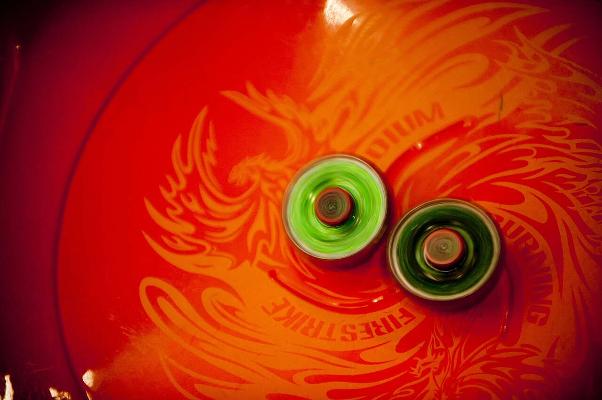

歡迎來到陀螺實驗室！
一起認識戰鬥陀螺：它是怎麼組成的？為什麼有的會衝、有的轉很久？怎麼比賽才算贏？

🗺️ 照著順序看，你就會從新手變成陀螺小博士！
1🧩零件區一顆陀螺由哪 3 個零件組成？名字裡的數字和英文是什麼意思？
2⚔️陀螺類型攻擊、防禦、持久、平衡四種類型，誰剋誰？
3🔧組裝區怎麼組、怎麼拆、怎麼放上發射器？還能自己搭配看看。
4🎬發射與轉法看動畫：不同軸心怎麼跑？直立和傾斜發射差在哪？
5🏆戰鬥規則區4 種贏法和得分，還有可以直接用的計分板。
6📝實驗學習單換一個零件，陀螺會變怎樣？可以列印出來做實驗。
7🛒購物清單入門要買什麼？依用途分類，只列型號。
👨👩👧 給大人
本站以 Takara Tomy 的 Beyblade X 系列為主（台灣最常見的版本）。動畫是自製的示意圖，用來說明「不同零件會怎麼動」，不是真實的物理數據。想看真實的陀螺對戰，可以到 Takara Tomy 官方網站看看。
本站以 Takara Tomy 的 Beyblade X 系列為主（台灣最常見的版本）。動畫是自製的示意圖，用來說明「不同零件會怎麼動」，不是真實的物理數據。想看真實的陀螺對戰，可以到 Takara Tomy 官方網站看看。
📷 照片和影片來源
本站的照片和影片都來自 Wikimedia Commons，使用自由授權，可以依授權條件使用。我們選的照片都以陀螺和對戰盤為主，避免拍到孩子的臉。
- Beyblade tournament：U.S. Air Force photo by Senior Airman Clayton Lenhardt，公有領域
- 對戰盤和兩顆陀螺、比賽中的對戰盤和計分牌、紅色軌道的對戰盤、發射的瞬間：P1898，CC BY 4.0（縮小尺寸）
- Beyblades in slow motion（影片）：GolhaMedia，CC BY-SA 4.0